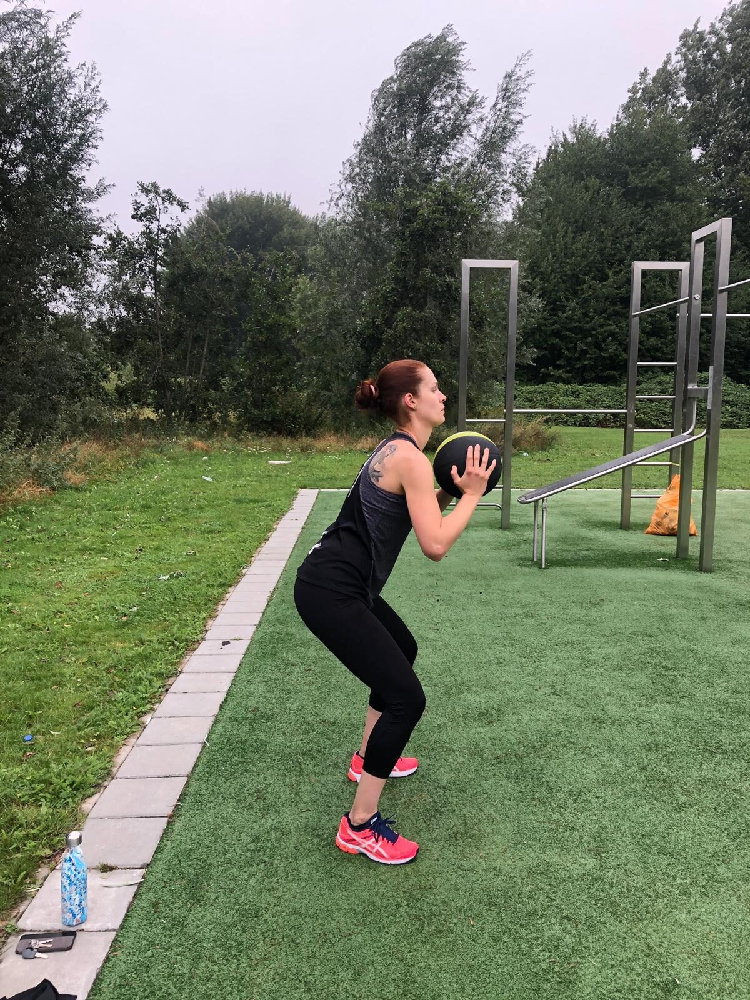
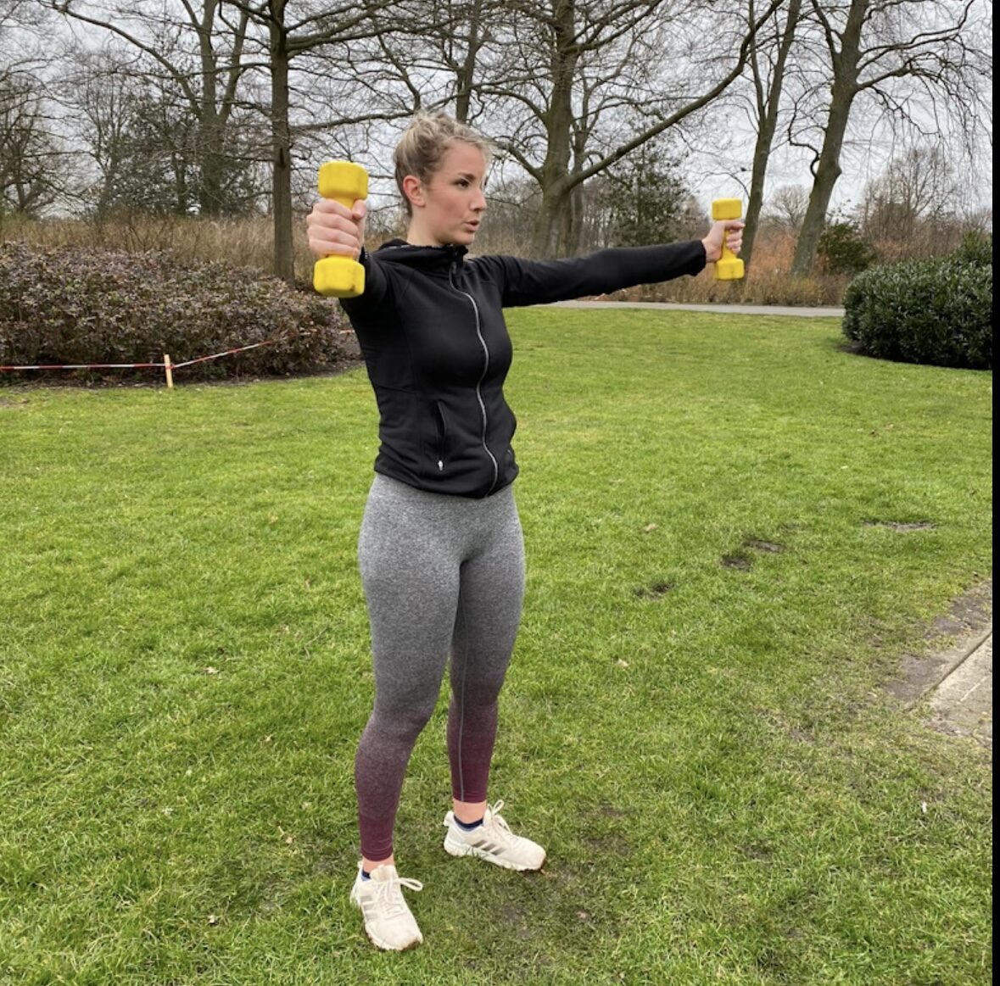

Keuzegids
Hoe kies je een personal trainer als vrouw?
Een goede personal trainer is meer dan iemand die oefeningen voordoet. Zeker voor vrouwen spelen zaken mee als hormonale schommelingen, zwangerschap, bekkenbodem en de overgang. Let bij je keuze op deze punten.

1. Duidelijke intake en doelen
Een serieuze trainer begint met een intake: wat wil je bereiken, hoe fit ben je nu, zijn er klachten of blessures? Zonder intake geen maatwerk. Vraag ook altijd een proefles aan om te voelen of er een klik is.

2. Kennis van het vrouwenlichaam
Menstruatiecyclus, zwangerschap, postpartum herstel en overgang hebben allemaal invloed op je training. Kies een trainer die hier aantoonbaar ervaring mee heeft, zodat je veilig en effectief traint in elke levensfase.

3. Flexibiliteit en vertrouwen
Trainen moet in je leven passen. Personal training aan huis of buiten scheelt reistijd en drempelvrees. Let op flexibele vormen zoals strippenkaarten, ruime trainingstijden en de mogelijkheid om samen met iemand te trainen.